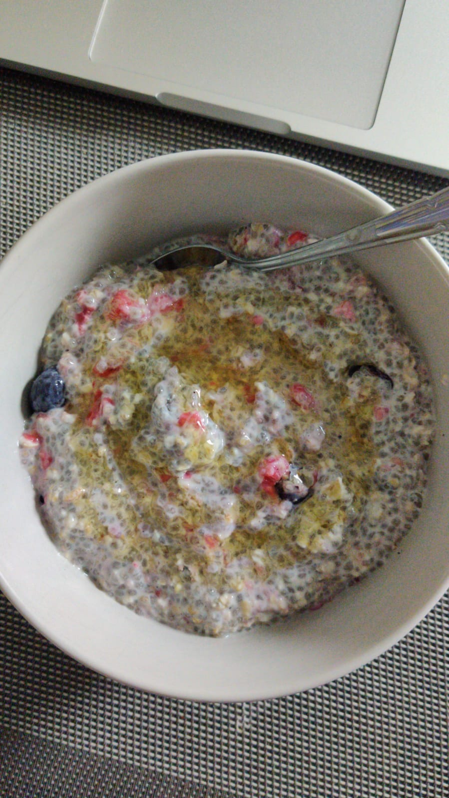

Overnight oats with chia seeds

Description
Prepare a nutritious breakfast with this overnight recipe and save the breakfast preparation time for enjoying the meal.
Ingredients
- 30g oats
- 15g chia seeds
- 30g berries (blueberries, blackberries or raspberries)
- Cashews and almonds
- Honey (optional sweetener)
Steps
- Put the oats and chia seeds in a bowl.
- Add milk to the bowl. The amount of milk used will determine the consistency of finished meal. To have thick consistency, the milk layer should be a little above the resting height of the other ingredients.
- The berries can be added to the bowl in the morning if you wish to preserve their firmness as soaking them overnight will make them softer. I added the berries in the morning.
- The same goes for cashews and almonds.
- In the morning, allow the overnight oats to sit at room temperature for a while to protect your teeth. Enjoy!